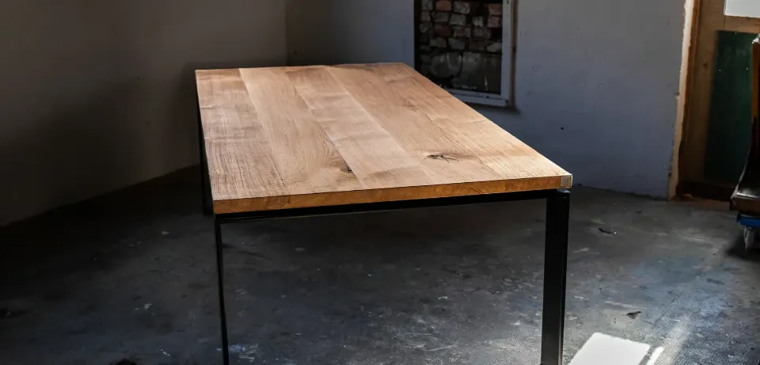
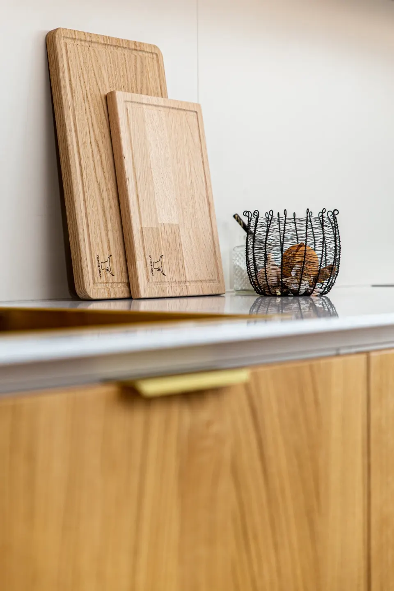
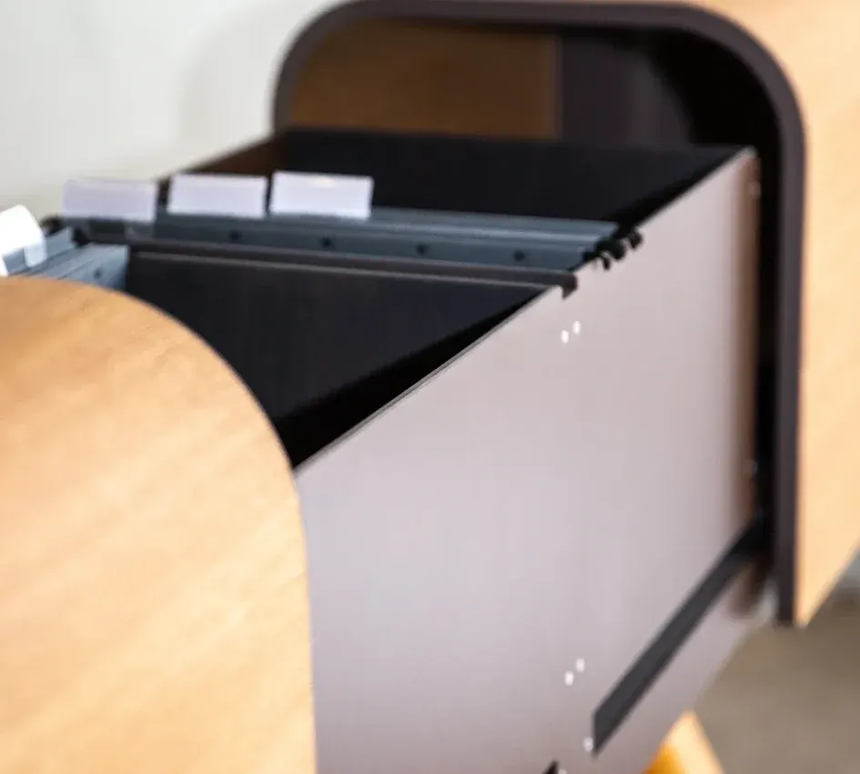
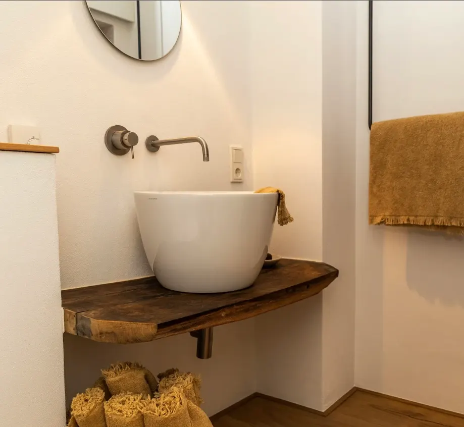

Zwei Tischlermeister aus Landau
Zwei Meister im Tischler-Handwerk mit einer Vision: gleiche Vorstellungen von Qualität, Arbeitsweise, Zusammenarbeit und Kundenkontakt. Arbeit macht Bock.

Das Team
Marius Landgraf
Inhaber · Tischlermeister
- Meister im Tischler-Handwerk (Bachelor Professional)
- Fotograf
Yannik Mosthaf
Inhaber · Tischlermeister
- Meister im Tischler-Handwerk (Bachelor Professional)
- Wirtschaftsingenieur (B.Eng.)
Stefan Mattern
Tischlermeister
- Meister im Tischler-Handwerk (Bachelor Professional)
Von der Meisterschule zur Schreinerei
Start in die Selbstständigkeit
Zuerst als Parkettleger und für den Einbau genormter Baufertigteile – schon während der Meisterschule.
Meistertitel
Mit dem Meistertitel wird aus dem Start offiziell eine Schreinerei.
Für die Südpfalz
Küchen, Möbel und Innenausbau für Landau und die ganze Südpfalz.
Handwerk im Detail
Gefertigt in unserer Werkstatt in Landau.



Habt ihr ein Projekt im Kopf?
Erzählt uns kurz, was ihr vorhabt. Wir melden uns persönlich und kommen zum Aufmaß zu euch.